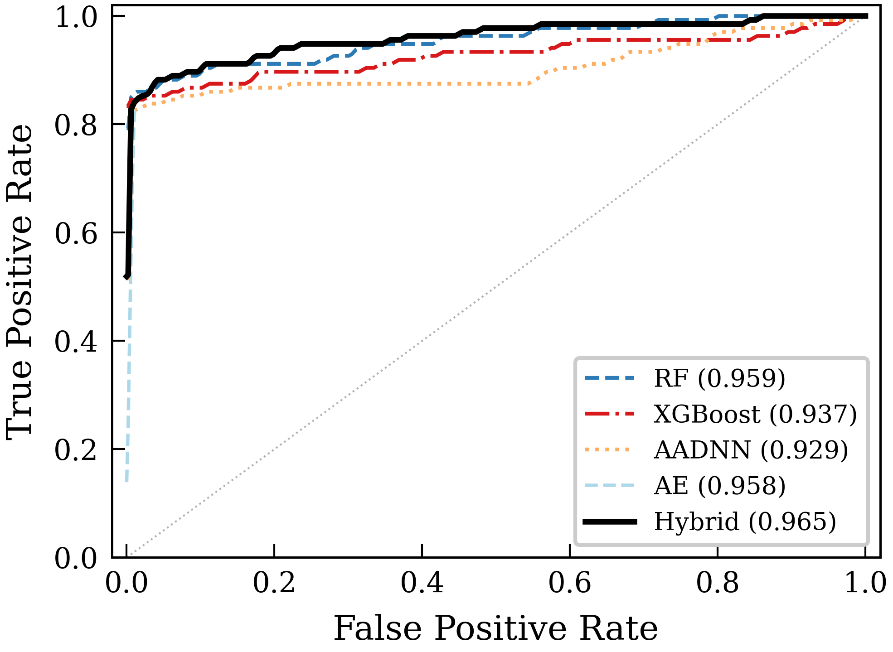
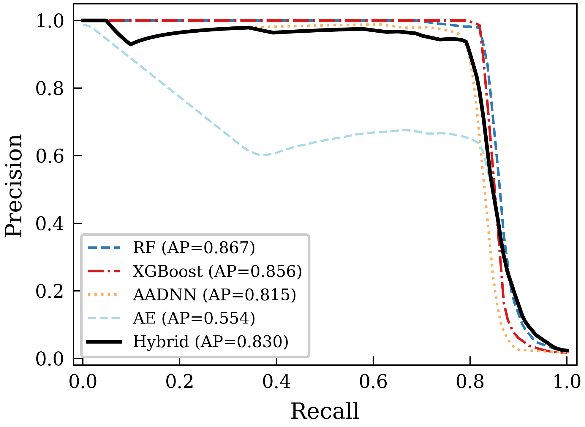
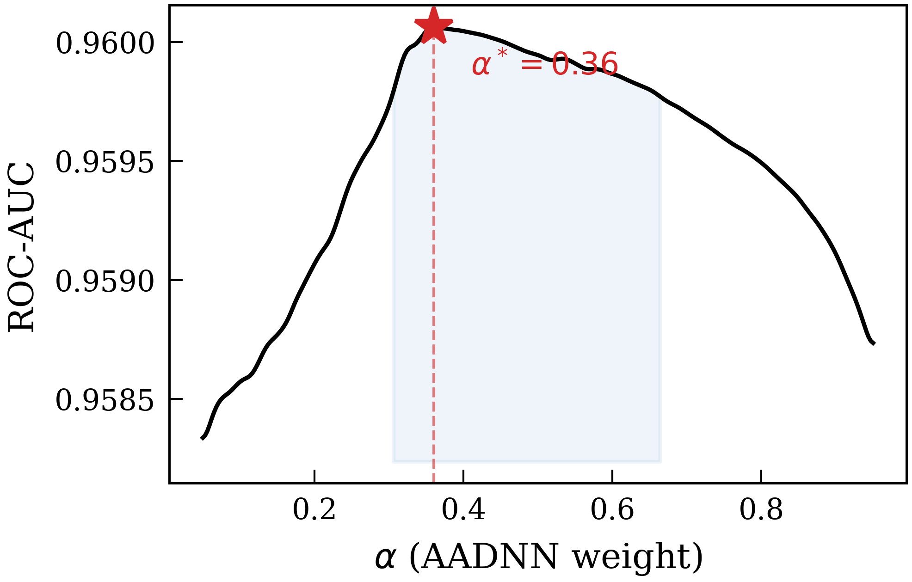
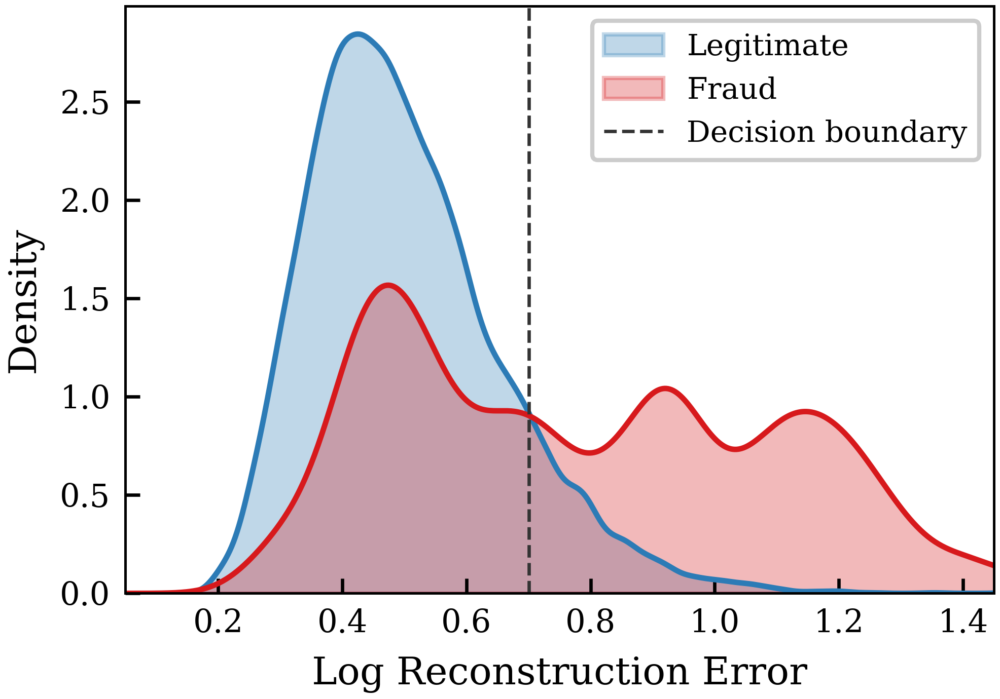
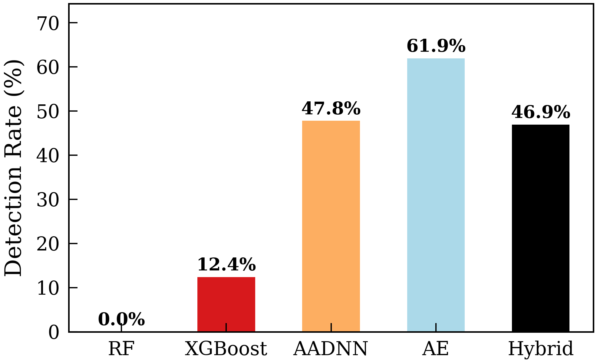
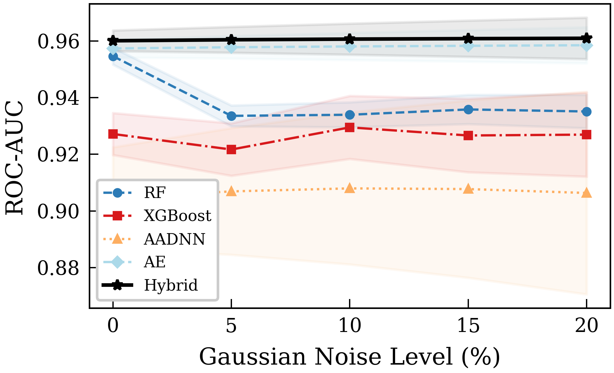
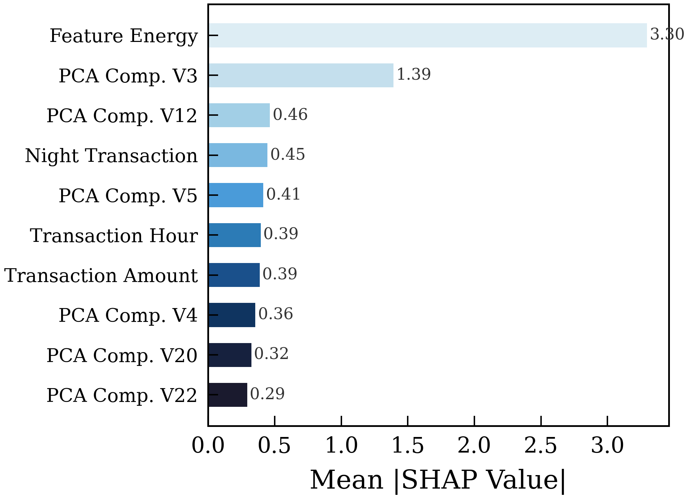
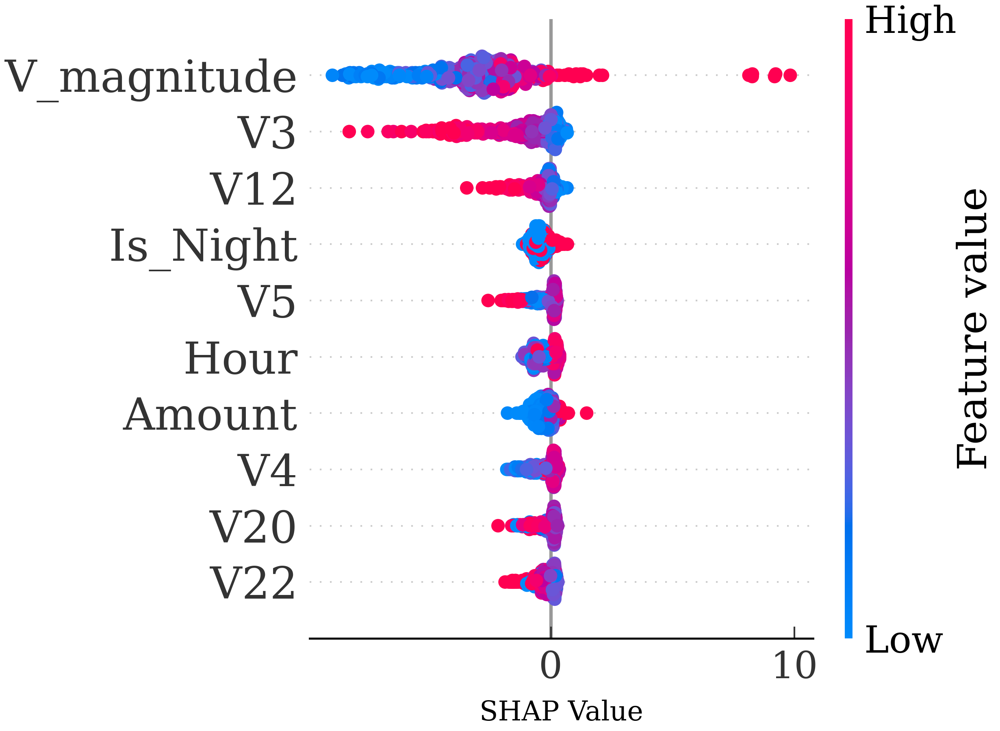
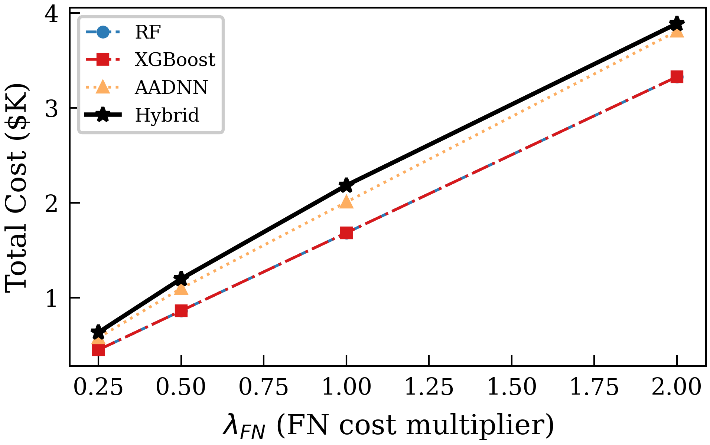
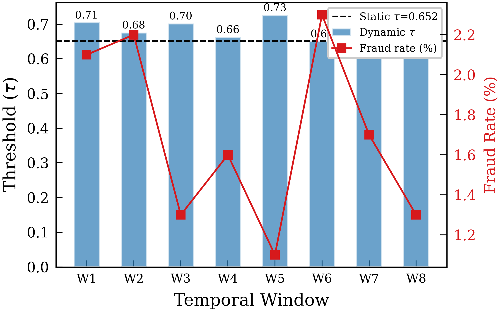

Hybrid Attention-Autoencoder Learning for Cost-Aware Explainable Credit Card Fraud Detection
An advanced dual-branch framework unifying supervised feature interactions (AADNN) and unsupervised anomaly manifolds (Autoencoder) with dynamic threshold optimization and post-hoc SHAP attribution.
Framework Architecture
Click on any module block in the diagram to inspect its mathematical formulation, design decisions, and parameter settings.
Thesis Results & Evaluation
Select a category below to explore the empirical tables, validation runs, and publication-ready figures generated from the experiments.
Overall Performance Comparison (3 Seeds)
| Model | ROC-AUC | PR-AUC | F1 Score | Recall |
|---|---|---|---|---|
| Random Forest | .959 ± .003 | .879 ± .009 | .895 ± .014 | 0.833 |
| XGBoost | .937 ± .007 | .859 ± .007 | .897 ± .013 | 0.841 |
| AADNN (Supervised) | .930 ± .018 | .839 ± .018 | .871 ± .005 | 0.799 |
| Autoencoder (Unsupervised) | .958 ± .003 | .507 ± .146 | .662 ± .099 | 0.748 |
| Hybrid (Proposed, Static) | .965 ± .004 | .846 ± .018 | .871 ± .007 | 0.804 |
| Hybrid + Dynamic Threshold | .965 ± .004 | .846 ± .018 | .886 | 0.819 |
Novel (Unseen) Fraud Detection Rates
| Model | Supervised? | Detection Rate (%) | Vulnerability to Novel Attacks |
|---|---|---|---|
| Random Forest | Yes | 0.0% | Extremely Vulnerable |
| XGBoost | Yes | 12.4% | Highly Vulnerable |
| AADNN Branch | Yes | 47.8% | Moderate |
| Autoencoder Branch | No (Anomaly) | 61.9% | Highly Resilient |
| Hybrid Framework (Proposed) | Hybrid | 46.9% | Resilient Balanced |










Interactive Transaction Playground
Adjust the transaction sliders to simulate credit card charges. The browser will run the hybrid scoring engine and show real-time SHAP attributions and classification verdicts.
Transaction Parameters
Live Classifier Verdict
Local Explanation (Live SHAP Attributions)
Shows how each feature directional shifted the final verdict. Red bars increase risk; blue bars decrease risk.